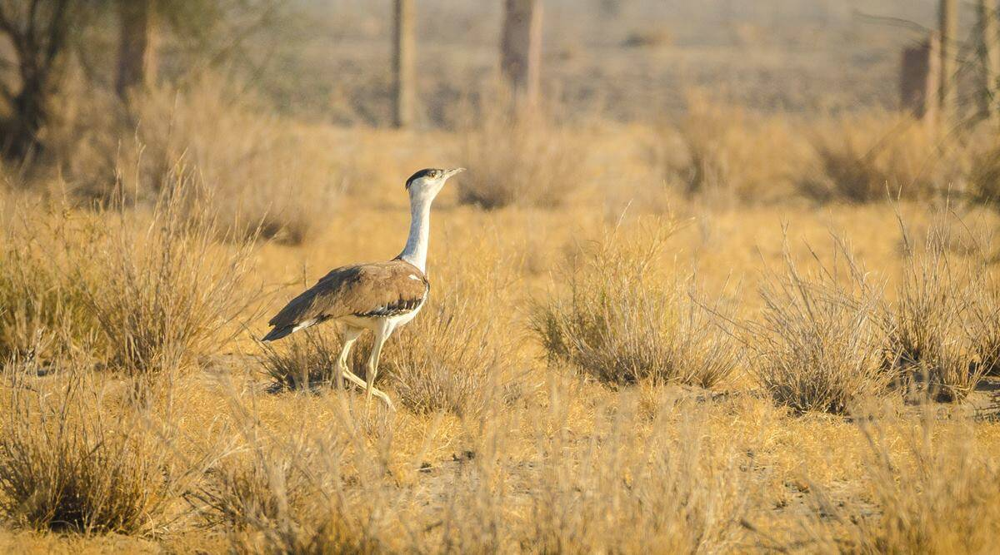
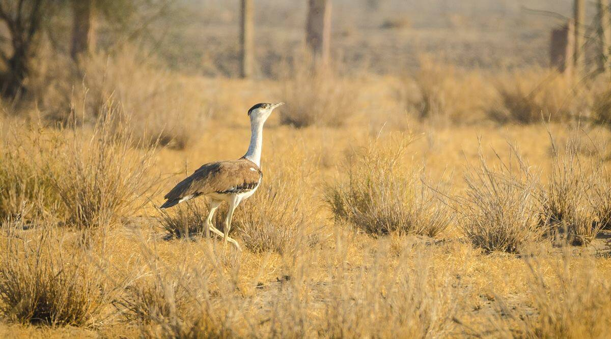
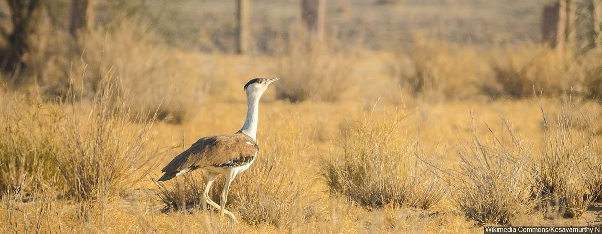
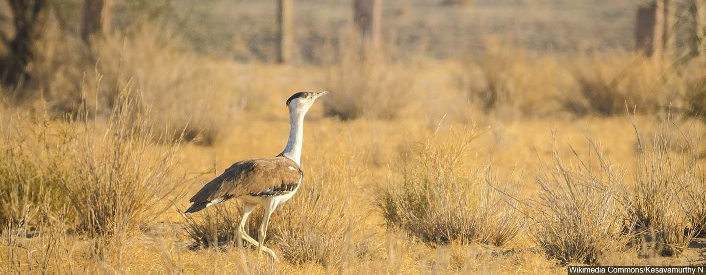

 


Great Indian Bustard - 202203103510091
SCROLL DOWN TO
VIEW DETAILS
VIEW DETAILS
Great Indian Bustard Sanctuary is a wildlife sanctuary for the great Indian bustard (Ardeotis nigriceps) at Solapur, Maharashtra, India. The land is drought-prone and semi-arid. It is in the Deccan thorn scrub forests ecoregion.